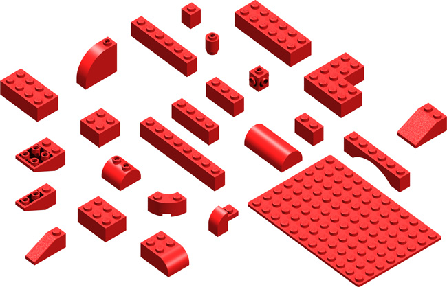
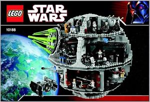
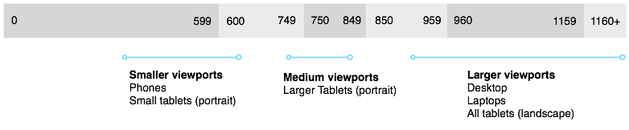
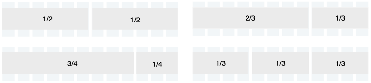
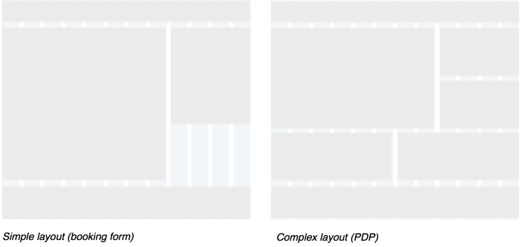
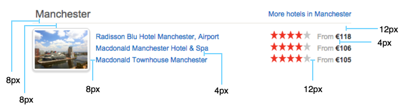

HCOM Design system (HaDeS)
The design system should help us efficiently create a cohesive design that can easily adapt to a constantly evolving product.
Key benefits from this system should include:
- a more efficient workflow for and between design and UI development
- a scalable and maintainable design framework for HCOM and affiliates
- performance gains across breakpoints
- a more modern (less dated) ‘look and feel’ to the site
UI Principles
- Lightweight
- Do more with less. Lightweight design with a minimal number of rules and guidelines.
- Reusable
- Having reuse at frint of mind will push us towards a more cohesive design, managable code base and efficient workflow
- Flexible
- Design rules/patterns should be flexible enough to quickly adapt to different contexts and situations
This document will act as a set of guidelines for the building blocks that make up the features we design. It will not be a set of specificaton rules for each component on ths site
Think this...
... not this
This document will cover guidelines on the following
- Layout
- Colour
- Typography
- Forms
- Links and Buttons
- Other global elements and interaction (e.g. show/hide, modal windows)
Layout
Breakpoints
Existing breakpoints with typical viewport ranges. Focus design efforts around these ranges.
Page layout
When laying out components on the page use a 12-column grid with percentage based columns and fixed width margins and gutters. This provides flexibility to create many different layouts and page types.
Smaller viewports
Default margins and gutters set to 8px, use multipes of 4px if design requires something different.
Medium to Large viewports
Default margins and gutters set to 16px, use multipes of 8px if design requires something different.

Grid proportions
Use the grid when laying out components and use proportions that best suit the content and required heirarchy.Typical grid proportions on HCOM
Example layouts
Content and element structure
Content and functional elements that sit with in a component do not need to sit on a grid.
Use mutiples of 4px for padding, margins etc when laying out content and fuctional elements inside components
Below is an example of how this might apply to an existing component. Spacing and positioning are used to help create visual relationships between information types.
